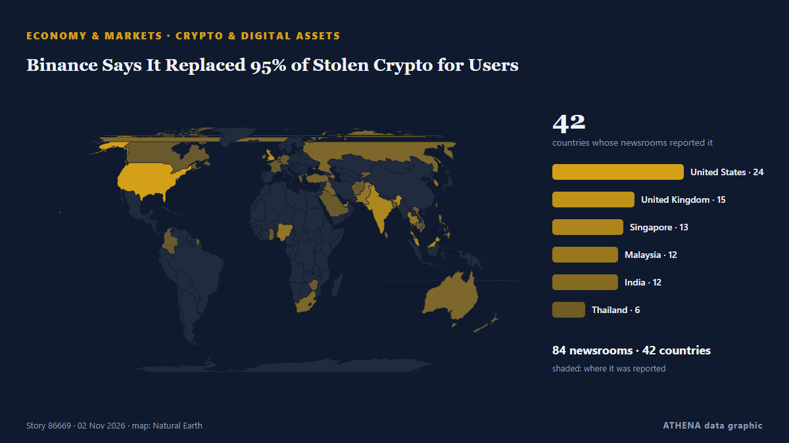

Marchés
Les marchés aujourd'hui : ce qui a bougé et pourquoi
Dernières 24 heures — événements : 23, pays : 20. Risque le plus élevé : 7.3 — Oil slips more than 1% as talks continue on ending Iran war.

Économie et marchésBinance Says It Replaced 95% of Stolen Crypto for Users
NEW YORK: Cryptocurrency platform Binance said on Thursday that it had fallen victim to a major hack, resulting in the freezing of more than US$2.5 billion in an effort to prevent the assets from… de New Straits Times
| 20 oct. | 6 |
|---|---|
| 21 oct. | 5 |
| 22 oct. | 19 |
| 23 oct. | 6 |
| 24 oct. | 6 |
| 25 oct. | 9 |
| 26 oct. | 32 |
| 27 oct. | 23 |
| 28 oct. | 21 |
| 29 oct. | 23 |
| 30 oct. | 31 |
| 31 oct. | 7 |
| 1 nov. | 7 |
| 2 nov. | 3 |
Moniteur des marchés
Veille des marchés - chiffres officiels
Dans quel sens évoluent les indicateurs officiels des marchés - hausse, baisse ou stabilité - avec la dernière valeur officielle et sa date, et l'actualité des marchés vérifiée par ATHENA. Valeurs officielles, pas des cours en temps réel.
Énergie
| 1 jour | 1 semaine | 1 mois | Valeur officielle | |
|---|---|---|---|---|
| Brent crude | ▼ | ▲ | ▲ | $123,10/bblDonnées officielles du 27 oct. 2026 |
| WTI crude | ▼ | ▼ | ▲ | $103,37/bblDonnées officielles du 27 oct. 2026 |
| US natural gas (Henry Hub) | ▲ | ▼ | ▼ | Mouvement inhabituel $2,76/MMBtuDonnées officielles du 27 oct. 2026 |
| European natural gas (1 mois · 3 mois · 12 mois)(1M · 3M · 12M) | ▲ | ▲ | ▲ | $25,49/MMBtuDonnées officielles du 1 sept. 2026 |
| Coal (Australia) (1 mois · 3 mois · 12 mois)(1M · 3M · 12M) | ▲ | ▲ | ▲ | $153,84/tDonnées officielles du 1 sept. 2026 |
Alimentation
| 1 mois | 3 mois | 12 mois | Valeur officielle | |
|---|---|---|---|---|
| Wheat | ▲ | ▲ | ▲ | $246,85/tDonnées officielles du 1 sept. 2026 |
Bourses américaines
| 1 jour | 1 semaine | 1 mois | Valeur officielle | |
|---|---|---|---|---|
| S&P 500 | ▼ | ▲ | ▲ | Direction seulement (indice © Cboe)Données officielles du 29 oct. 2026 |
| Nasdaq Composite | ▼ | ▲ | ▼ | Direction seulement (indice © Cboe)Données officielles du 29 oct. 2026 |
Taux, risque et dollar
| 1 jour | 1 semaine | 1 mois | Valeur officielle | |
|---|---|---|---|---|
| US 10-year Treasury yield | ▼ | ▲ | ▼ | 4,98 %Données officielles du 29 oct. 2026 |
| Market volatility (VIX) | ▲ | ▼ | ▲ | Direction seulement (indice © Cboe)Données officielles du 29 oct. 2026 |
| US dollar, broad index | ▬ | ▬ | ▲ | 121,32Données officielles du 23 oct. 2026 |
L'euro face aux autres monnaies
| 1 jour | 1 semaine | 1 mois | Valeur officielle | |
|---|---|---|---|---|
| EUR/USD | ▲ | ▼ | ▼ | 1,1172 USDDonnées officielles du 30 oct. 2026 |
| EUR/GBP | ▼ | ▼ | ▼ | 0,8338 GBPDonnées officielles du 30 oct. 2026 |
| EUR/CHF | ▼ | ▼ | ▼ | 0,9194 CHFDonnées officielles du 30 oct. 2026 |
| EUR/JPY | ▼ | ▲ | ▼ | 175,68 JPYDonnées officielles du 30 oct. 2026 |
| EUR/CNY | ▲ | ▼ | ▼ | 7,4326 CNYDonnées officielles du 30 oct. 2026 |
| EUR/TRY | ▲ | ▲ | ▲ | 55,801 TRYDonnées officielles du 30 oct. 2026 |
| EUR/NOK | ▼ | ▼ | ▼ | 10,3120 NOKDonnées officielles du 30 oct. 2026 |
Sources : Energy Information Administration des États-Unis (pétrole, gaz américain), FMI (gaz européen, charbon, blé), Trésor et Réserve fédérale des États-Unis (taux à 10 ans, indice du dollar) Cboe (VIX), S&P Dow Jones Indices (S&P 500) et Nasdaq (Nasdaq Composite), via FRED (Réserve fédérale de Saint-Louis) ; taux de référence de l'euro © Banque centrale européenne. Les chiffres sont les dernières valeurs officielles avec leur date, pas des cours en temps réel. Les directions sont calculées par ATHENA.
Crypto, ETF et actions dans l'actualité
- AI safety concerns and mounting losses shadow Anthropic’s landmark IPO Risque 1.2 2 nov.
- Bulgarian Stock Market Rallies as It Hits Nearly 19-Year High Risque 0.0 2 nov.
- Palm falls over 1% on weaker rival oils, higher stocks Risque 0.8 2 nov.
- Binance Says It Replaced 95% of Stolen Crypto for Users Risque 3.0 2 nov.
- Korea Exchange sets up plan for shorter settlement for stock trading Risque 0.6 2 nov.
- Bitcoin price falls below $80,000 again Risque 1.1 2 nov.
- Nasdaq Falls 2.9% on Fed Hike Fears | Global Economy, Nov 2 Risque 2.4 2 nov.
- Shares steady as Apple earnings near, oil eases Risque 0.0 2 nov.
- Asia shares bend under AI stress; Apple earnings loom Risque 1.0 2 nov.
- Seoul stocks open lower as disappointing tech earnings trigger AI spending woes Risque 5.3 2 nov.
Suivis
Dernières infos
BP profits hit 18-year high as Iran war drives up oil refining margins
Around quarter of EU refineries have shut down over past 2 decades, reducing domestic refining capacity by around 10%, while divestments have accelerated across Europe, says Dan Jorgensen. de Anadolu Agency (English)
Oil slips more than 1% as talks continue on ending Iran war
Both oil benchmarks are down in early trading. de The Business Times
Dakar Rally 2027 will not be held in Saudi Arabia, organisers say
The 2027 edition of the Dakar Rally has been moved out of Saudi Arabia due to security concerns, organisers Amaury Sport Organisation said on Sunday. de Cyprus Mail
Oil prices extend rally to near six-month high amid Houthi attacks on Saudi Arabia
Brent crude futures touched an intraday high of $114.94 a barrel on Friday after Houthi attacks on Saudi Arabia’s civilian and energy infrastructure, with India’s crude basket averaging $120.08 so… de The Hindu
Meta strikes deal to keep Zuckerberg in California after wealth tax concerns
Meta Platforms has struck a deal with Mark Zuckerberg to keep him in California after the CEO warned he was considering leaving the state that houses the company's headquarters if voters pass a… de MyJoyOnline
India's Crude Oil Import Bill Soars 46% as Middle East Crisis Drives Up Prices
India paid $15.4 billion to import crude oil in September, up by 46% from the year-ago import bill of $10.5 billion, as international oil prices and the Indian import crude basket soared amid… de OilPrice.com
Oil prices fall as peace hopes offset fears of growing Middle East conflict
Oil prices fell on Thursday, paring gains made a day earlier, as hopes for peace talks took the edge off renewed concerns over Middle East supply disruptions from escalating regional conflict. de Business Recorder
Dangote Refinery’s IPO closes with investors from 120 countries
"This is a historic achievement for Africa. de Vanguard
Ambani's Jio to make Mumbai trading debut after record $3.2 billion India IPO
Low-cost broadband provider Jio Platforms aims for £81bn valuation when it floats on the stock market on Wednesday India’s second-richest man, Mukesh Ambani, is launching what could be the country’s… de The Guardian
Tilak, Nitish rescue India from 112/6 to seal thrilling 4-wicket win vs New Zealand
In a thrilling second T20I, Tilak Varma and Nitish Kumar Reddy showcased their prowess, steering India to a nail-biting victory against New Zealand. de Times of India
Ukraine, Mideast War Drive Trump's Midterm Headache As US Oil Prices Surge
Energy exports from the Gulf have plunged since US-Israeli strikes on Iran from February caused Tehran to respond by choking off the Strait of Hormuz, a vital waterway for oil and gas transit. de NDTV